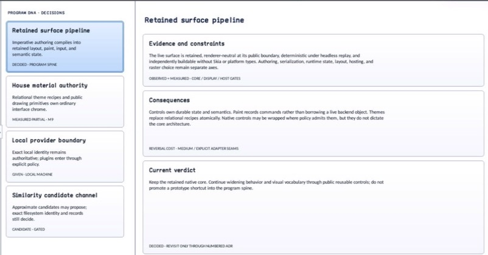

class · visual
MasterDetailView
MasterDetailView is a content-agnostic retained shell over SplitContainer with explicit role ownership, theme-derived or explicit splitter policy, responsive compact presentation, focus-safe collapse, and inspectable presentation events.
Visual evidence

Ownership and hierarchy
- Hierarchy
- ContainerControl → MasterDetailView
- Declaration
- include/gui_forms/controls/container/master_detail_view/master_detail_view.hpp:42
- Definition
- src/controls/container/master_detail_view/master_detail_view.cpp
Public methods
MasterDetailView
explicit MasterDetailView(StableId stable_id)Constructs private SplitContainer infrastructure and configures it from the active structural layout policy; visual attachment remains lazy.
initialize_control_tree
void initialize_control_tree()Attaches the owned SplitContainer exactly once.
master
[[nodiscard]] Control::Ptr master() const noexceptReturns the control occupying the master role.
detail
[[nodiscard]] Control::Ptr detail() const noexceptReturns the control occupying the detail role.
set_master
[[nodiscard]] Control::Ptr set_master(Control::Ptr control)Docks an unparented control into the first splitter panel and returns the detached predecessor; infrastructure and cross-role reuse are rejected.
set_detail
[[nodiscard]] Control::Ptr set_detail(Control::Ptr control)Docks an unparented control into the second splitter panel and returns the detached predecessor; infrastructure and cross-role reuse are rejected.
split_container
[[nodiscard]] std::shared_ptr<SplitContainer> split_container() const noexceptReturns the genuine retained SplitContainer used for rendering, accessibility, pointer dragging, and keyboard splitter behavior.
master_detail_layout
[[nodiscard]] const MasterDetailLayout& master_detail_layout() const noexceptReturns the stored explicit layout value; use effective_master_detail_layout for the active policy.
uses_theme_layout
[[nodiscard]] bool uses_theme_layout() const noexceptReports whether current splitter dimensions and breakpoint derive from structural Theme tokens.
effective_master_detail_layout
[[nodiscard]] MasterDetailLayout effective_master_detail_layout() const noexceptResolves inherited structural Theme geometry or the explicit bounded layout.
set_master_detail_layout
void set_master_detail_layout(MasterDetailLayout layout)Validates finite ordered extents, makes the explicit layout authoritative, reconfigures the splitter, and invalidates all affected retained phases.
reset_master_detail_layout_to_theme
void reset_master_detail_layout_to_theme()Restores inherited structural Theme geometry and reconfigures the genuine splitter.
display_mode
[[nodiscard]] MasterDetailDisplayMode display_mode() const noexceptReturns the requested automatic or explicit presentation mode.
set_display_mode
void set_display_mode(MasterDetailDisplayMode mode)Selects automatic, side-by-side, master-only, or detail-only presentation; invalid values fail atomically.
effective_display_mode
[[nodiscard]] MasterDetailDisplayMode effective_display_mode() const noexceptReturns the presentation currently applied after responsive resolution.
compact_detail_visible
[[nodiscard]] bool compact_detail_visible() const noexceptReports which role automatic compact presentation should expose.
set_compact_detail_visible
void set_compact_detail_visible(bool visible)Selects master or detail for the next automatic compact arrangement.
show_master
void show_master()Convenience operation selecting the master role in compact automatic mode.
show_detail
void show_detail()Convenience operation selecting the detail role in compact automatic mode.
presentation_changed
[[nodiscard]] Event<const MasterDetailPresentationChange&>& presentation_changed() noexceptReturns events describing previous/current applied mode and whether accommodation caused the transition.
measure
[[nodiscard]] Size measure(Size available) overrideMeasures stable snapshots of both role controls, tolerates mutation during callbacks, and combines desired size according to resolved orientation/mode.
arrange
void arrange(Rect final_bounds) overrideConfigures and attaches the splitter, resolves responsive mode from final bounds, applies collapse with an explicit origin, and fills the view.
semantic_descriptor
[[nodiscard]] SemanticDescriptor semantic_descriptor() const overrideProjects an optional named group whose value reports side-by-side, master, or detail presentation.